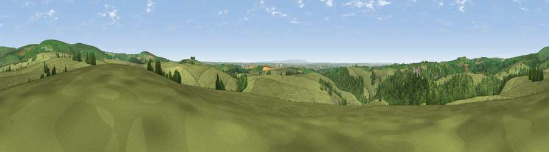

Viewpoint near Charles
#9800 in England · top 19% of its area beats it · near CharlesThe view, rendered

A 360° render of this exact spot computed from the terrain model, tree cover and land cover — summer colours, afternoon light, calibrated against photographs of famous viewpoints. Real trees, hedges and buildings will differ in detail.
The panorama
Grey silhouette: terrain skyline in each direction (720 bearings, Earth curvature and refraction included). Dashed green: skyline with trees (+15 m) and buildings (+8 m) as obstacles. Blue strip: how far the ground is visible on each bearing.
Where the view opens
Wedge length = distance to the farthest visible ground on that bearing (vegetation-aware). Rings at 10, 25 and 50 km.
What fills the view
76% grassland · 20% woodland · 4% cropland
Angular shares of the visible panorama (visual magnitude), not map area. Landscape diversity 0.29 (0–1 Shannon).
Key numbers
More beautiful places nearby
The staircase of upgrades: each row has a higher view potential than everything closer. Driving times are estimates from straight-line distance, calibrated against real road routing — check an actual route before setting out.
| Place | Direction | Drive | Score |
|---|---|---|---|
| Viewpoint near Charles | SW · 2 km | ~6 min | 63.7 |
| Viewpoint near North Molton | ESE · 4 km | ~8 min | 64.8 |
| Viewpoint near East Buckland | SW · 4 km | ~9 min | 65.4 |
| Viewpoint near Brayford | NNE · 4 km | ~10 min | 74.1 |
| Viewpoint near Challacombe | N · 6 km | ~13 min | 75.8 |
| Viewpoint near Challacombe | N · 10 km | ~20 min | 77.1 |
| Codden Hill | WSW · 13 km | ~24 min | 81.3 |
| Lynton Hill | N · 15 km | ~28 min | 82.7 |
51.08329, -3.84684 · source: screening · position refined by local search. Computed location — check access rights before visiting.